kosta4a/tactile-design applied to Rituel Cards. Left = before, right = after.
Secondary/muted/destructive were bordered or grey fills with a flat look and a translate-y press. Now: white fill + 1px ink ring + crisp 1px drop (the tactile "button" recipe), red text on the destructive trigger, and a scale(.97) squeeze on press at 150ms on the strong ease-out curve.
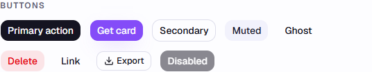
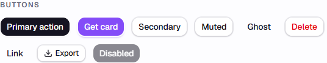
Caught while held down: the primary squeezes to 97% instead of nudging down 1px.
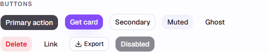
Inputs were bordered boxes. Now they're wells: an ink-3 fill that deepens a step on focus, no border — a field sinks into the surface, a button rises off it.
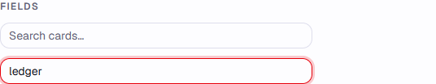
Cards drew their edge with a flat ring-1 border. Now a raised surface: white + 0.07 ring + crisp 1px drop + a tight 3px/4px shadow — the card visibly sits on the page. Badges got their own tinted edge (14% ring + 16% drop of their own colour).
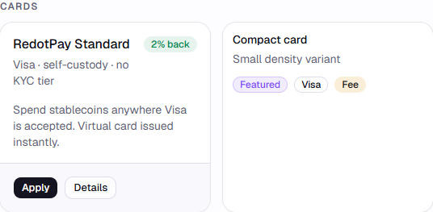
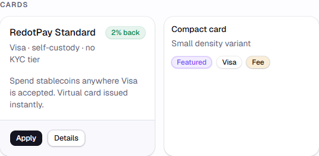
The table floated borderless. Now a framed object: rounded 8px, 0.5px frame, and the table drop (the button's 1px drop without its ring) so it reads as one tactile object.
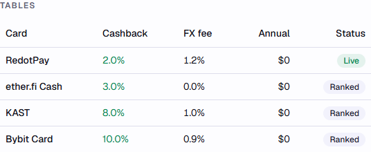
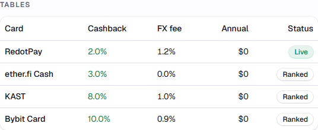
Menu kept white but the edge/shadow moved to the menu recipe (ring + 1px + tight 4px/8px drop), 150ms ease-out in, and item highlight is now a neutral muted fill instead of brand-purple — hue no longer ranks hover states.
Backdrop was a barely-there 10% wash. Now black 30% with a 2px blur (90% in dark), and the sheet draws the modal edge instead of a generic shadow-lg — the layer stack reads correctly.
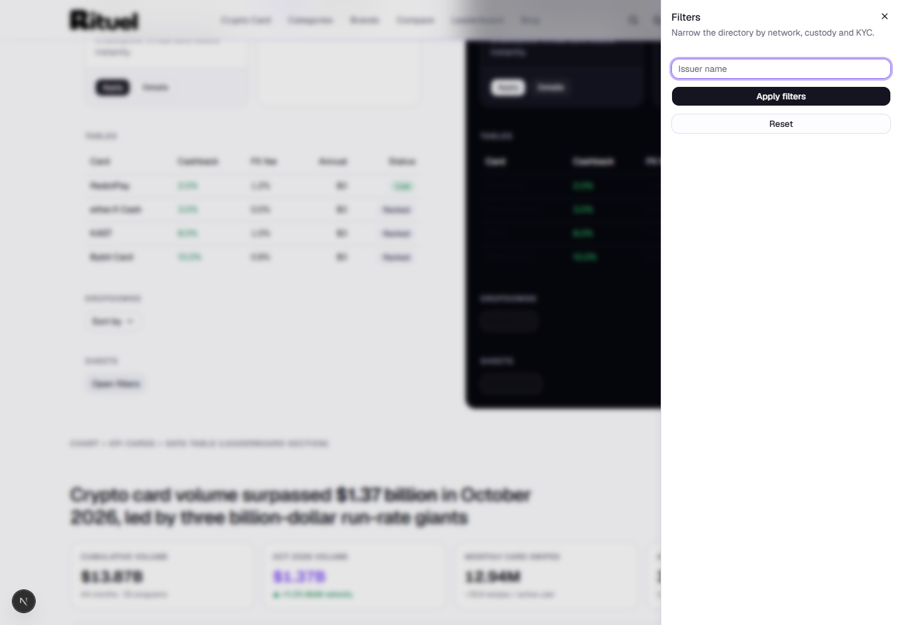
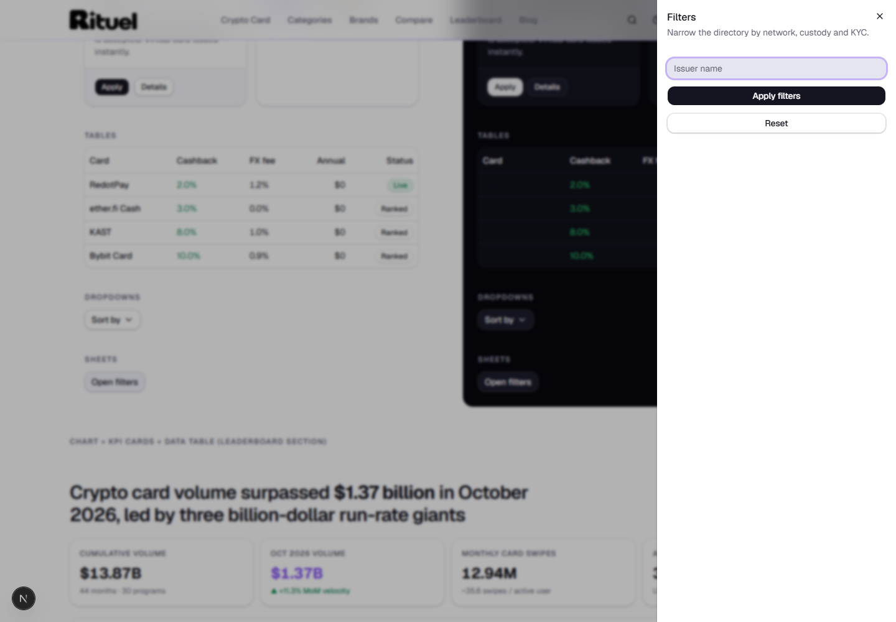
The leaderboard chart card gets the same raised-surface recipe; gridlines went to a true 0.5px hairline (1px baseline).
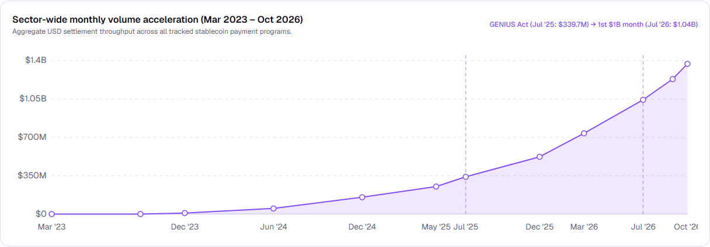
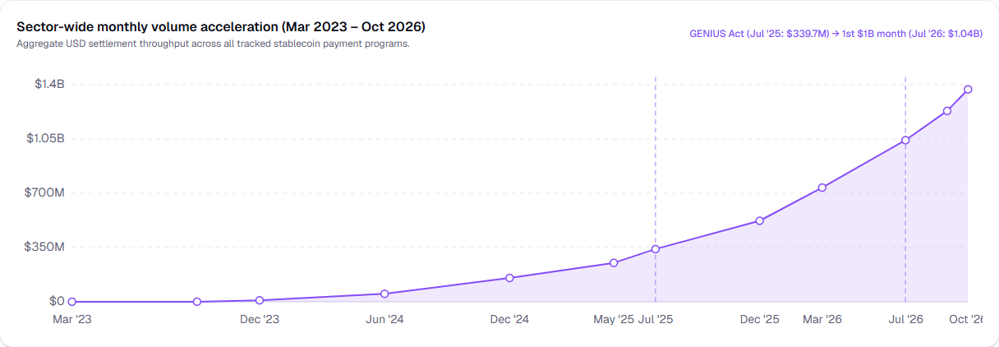
KPI tiles, the chart card and the top-10 table all sit raised now; the metric toggle's chosen option is a white pill with the button shadow inside a muted track instead of a solid brand fill.
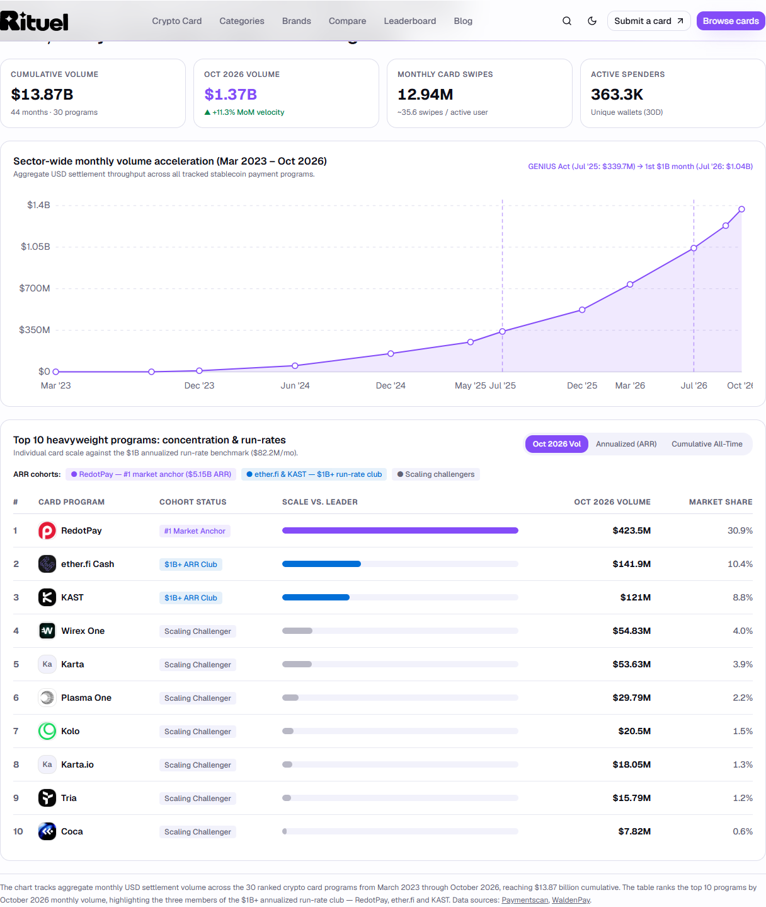
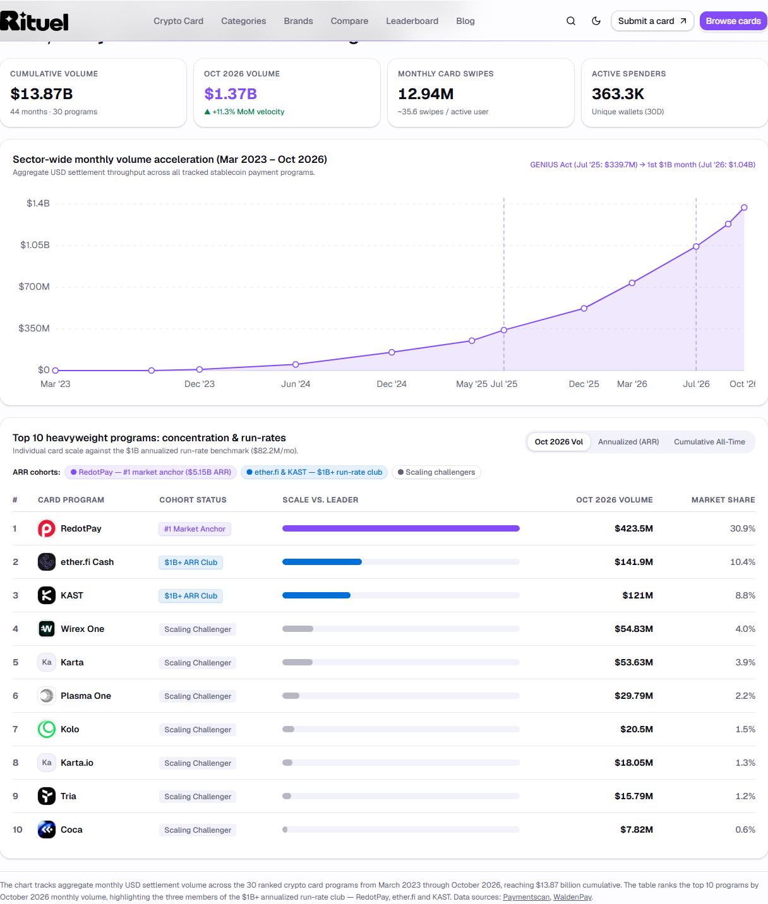